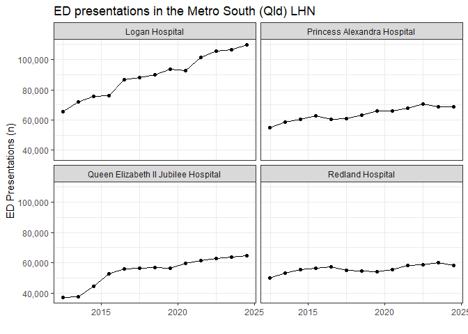

The purpose of readaihw is to provide access to the MyHospitals API so that hospital data from the AIHW can be accessed directly from R. For details about what data are provided by the AIHW see here. See here for details about the MyHospital API.
Installation
You can install the development version of readaihw like so:
# install.packages("pak")
pak::pkg_install("RWParsons/readaihw")Example - ED presentations
This example gets data on hospital presentations and presents these counts as a graph for hospitals in the Metro South (Qld) local hospital network over time.
library(readaihw)
library(dplyr)
library(ggplot2)
ed_presentations <- read_flat_data_extract("MYH-ED")
msh_hospital_codes <- get_hospital_mappings() |>
filter(
local_hospital_network_lhn == "Metro South (Qld)",
type == "Hospital"
) |>
pull(code)
ed_presentations |>
filter(reporting_unit_code %in% msh_hospital_codes) |>
select(date = reporting_end_date, hospital = reporting_unit_name, value) |>
mutate(value = as.numeric(value), date = lubridate::ymd(date)) |>
summarize(count = sum(value, na.rm = TRUE), .by = c(hospital, date)) |>
ggplot(aes(date, count)) +
geom_line() +
geom_point() +
facet_wrap(~ stringr::str_wrap(hospital, 40)) +
theme_bw() +
scale_y_continuous(labels = scales::label_comma()) +
labs(x = "", y = "ED Presentations (n)", title = "ED presentations in the Metro South (Qld) LHN")